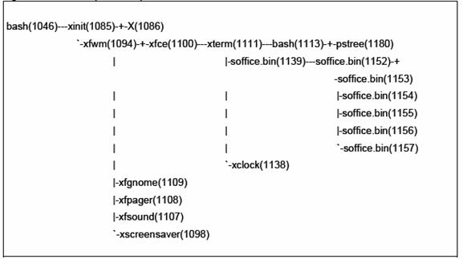
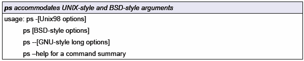
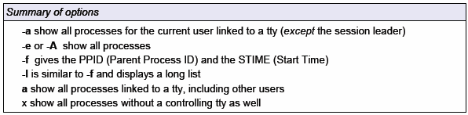
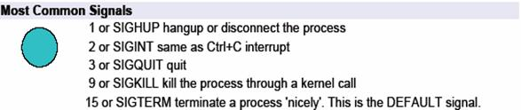
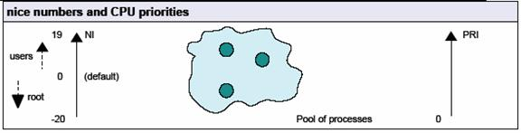
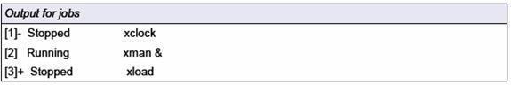

Bài 10. QUẢN LÝ TIẾN TRÌNH
Tiến trình là chương trình đang chạy. Mỗi tiến
trình có một định danh (PID) duy nhất. Giá trị của PID có thể dùng để quản lý
tiến trình. Nếu process_2 được sinh ra bởi process_1 thì nó được gọi là tiến
trình con, còn process_1 thì được gọi là tiến trình cha. Quan hệ cha-con tạo
nên cây phả hệ của các tiến trình.
Lệnh pstree
cho biết cây phả hệ các tiến trình.

Trong hình trên tất cả các định danh tiến trình
(PID) đều được nhìn thấy; giá trị của chúng được tăng dần. Lựa chọn thông dụng
nhất của lệnh này là -p sẽ hiển thị
các PID và -h sẽ làm nổi rõ các tiến trình của người dùng.
Sử dụng lệnh ps là một cách trực tiếp để
xác định tiến trình nào đang thực hiện. Phần lớn người dùng kết hợp một số các
lựa chọn để phù hợp với mục đích tìm kiếm. Dưới đây là 3 lưạ chọn như vậy.
|
ps
-ux |
hiển thị tất cả các tiến trình thực hiện bởi
người dùng |
|
ps
-T |
hiển thị các tiến trình dang chạy bởi thiết bị
đầu cuối hiện thời của người dùng |
|
ps
-aux |
hiển thị tất cả các tiến trình trên hệ thống |
Để biết chi tiết hơn các lựa chọn chúng ta nên sử
dụng lệnh ps manpage và chọn ra
những lựa chọn phù hợp nhất.


Tiện ích top
cho biết tài nguyên được sử dụng bởi các tiến trình, cập nhật liên tục và sắp
xếp giảm dần theo phần trăm CPU được sử dụng. Trong khi tiện ích top đang thực hiện chúng ta có thể gõ h đối với một danh sách các lệnh.
Khoảng trống sẽ được cập nhật thông tin tức thời. Chúng ta cũng có thể dùng top
để thay đổi mức độ ưu tiên của một tiến trình. Bấm q khi cần dừng top.
Lệnh kill
sẽ gửi các tín hiệu đến các tiến trình. Có tổng cộng 63 tín hiệu. Tín hiệu mặc
định dừng một tiến trình được gọi là SIGTERM với giá trị 15.
Cú
pháp:
kill
[SIGNAL] process_PID
Mọi tiến trình có thể lựa chọn nhận hay không nhận
một tín hiệu ngoại trừ SIGKILL sẽ được thực hiện bằng nhân hệ thống. Các daemon
sẽ hiểu SIGUP có nghĩa là "đọc lại file cấu hình"

Chúng ta có thể sử dụng lệnh killall để dừng các tiến trình mà không cần biết PID.
Cú pháp:
killall
[SIGNAL] process_NAME
Các giá trị nice value (NI) thay đổi quyền ưu tiên
của CPU và được dùng để cân bằng quá trình sử dụng CPU trong môi trường đa
người dùng. Mỗi tiến trình bắt đầu với giá trị NI mặc định là 0. NI nằm trong phạm vi từ 19 [thấp nhất] đến
-20 [cao nhất]
Chỉ có người quản trị hệ thống có thể giảm giá trị
NI của một tiến trình. Từ khi tất cả các tiến trình bắt đầu với giá trị NI mặc
định là 0, chỉ có người quản trị hê thống có thể thiết lập giá trị âm cho các
giá trị NI.

Sử dụng lệnh renice
để thay đổi mức độ ưu tiên của một tiến trình. Dùng lệnh nice để thiết lập mức độ ưu tiên của một tiến trình.
Cú
pháp:
nice
-<NI> <process>
renice
<+/-NI> -p <PID>
Chú ý rằng renice
thực hiện với các PID và xử lý danh sách các tiến trình tại một thời điểm. Một
lựa chọn có ích của renice là -u, lựa chọn này sẽ ảnh hưởng đến tất
cả các tiến trình thực hiện bởi người dùng.
Thiết
lập giá trị 1 cho các tiến trình 234 và 765:
renice
+1 -p 234
765
Thiết
lập giá trị -5 cho xclock:
nice --5 xclock
Tiến trình có thể chạy ở chế độ nền hoặc nổi.
Linux cho phép người dùng sử dụng tổ hợp phím CTRL+Z để tạm dừng một tiến trình và khởi động lại tiến
trình đó bằng cách gõ lệnh fg. Ví
dụ, người dùng đang xem trang man
của lệnh sort, nhìn xuống cuối thấy
có tùy chọn -b, muốn thử tùy chọn
này đồng thời vẫn muốn xem trang man.
Thay cho việc đánh q để thoát và sau
đó chạy lại lệnh man, cho phép người
dùng gõ CTRL+Z để tạm dừng lệnh man và gõ lệnh thử tùy chọn -b. Sau khi thử xong, hãy gõ fg để tiếp tục xem trang man của lệnh sort. Kết quả của tiến trình trên hiển thị như sau:
#
man sort | more SORT(1) FSF SORT(1) NAME
sort
- sort lines of text Files
SYNOPSIS
../src/sort [OPTION] ... [Files]... DESCRIPTION
Write
sorted concatenation of all FILE(s) to standard out-put.
+POS1
[-POS2]
start
a key at POS1,end it *before* POS2 obsoles-cent)field numbers and character
offsets are num-bered starting with zero(contrast with the -k option)
-b
ignore leading blanks in sort fields or keys
--More--
(CTRL+z)
[1]+
Stopped man sort | more
#
ls -s | sort -b | head -4
1
Archives/
1
InfoWorld/
1
Mail/
1
News/
1
OWL/
#
fg
man
sort | more
--More--
Linux còn cung cấp cách thức để chạy một chương
trình dưới chế độ nền (background). Sử dụng dấu & khi chạy một
chương trình từ Terminal để tiến trình
chạy ở chế độ nền. Ví dụ
$ xclock &
[1] 7383
Tiến trình trong chế độ nền được đánh số thứ tự
(được bao bởi dấu ngoặc vuông []), theo sau là định danh của quá trình.
Để đưa tiến trình nền về chế độ nổi, sử dụng lệnh fg
với tham số là số thứ tự tiến trình chạy nền, như ví dụ sau,
fg 1
Khi một chương trình đang chạy trong chế độ nổi,
dấu nhắc shell có thể khôi phục bằng cách ngắt chương trình đó. Tín hiệu ngắt
được sinh ra bởi tổ hợp phím Ctrl+Z.
Khi một công việc nhận tín hiệu Ctrl+Z, nó sẽ được dừng và dấu nhắc shell sẽ xuất hiện. Để khởi tạo lại
chương trình trong chế độ nền chúng ta
chỉ cần chạy lệnh bg
Ví
dụ:
|
$xclock |
xclock chạy trong chế độ nổi, dấu nhắc shell
biến mất |
|
[1]+ Stoppep xclock |
xclock nhận tín hiệu ^Z |
|
$bg |
dấu nhắc shell được khôi phục và đưa vào lệnh bg |
|
[1]+ xclock & |
xclock đang chay trong chế độ nền sau |
|
$ |
|
Tiện ích jobs
hiển thị tất cả các tiến trình đang chạy bắt đầu từ shell hiện thời. Giá trị
job number, trạng thái công việc (đang chạy hay dừng), và 2 tiến trình được
thay đổi gần nhất sẽ được hiển thị

Chúng ta có thể dừng và bắt đầu lựa chọn các công
việc một cách thuận tiện bằng cách sử dụng job number. Việc lựa chọn này được
thực hiện cùng với lệnh fg
Gọi job 2 ở
chế độ nổi và loại bỏ (kill) job 1
fg
2
1.
Dùng lệnh ps
xem giá trị NICE của các tiến trình, sau đó dùng lệnh top hoặc renice
để thay đổi giá trị NICE của các tiến trình trong hệ thống.
2.
Viết script findps.sh
với đầu vào là 1 số. Script sẽ tìm trong hệ thống tiến trình có PID là tham số đã
nhập, đồng thời in ra PID và Tên của tiến trình cha của nó.
3.
In ra 10 tiến trình
có độ ưu tiên cao nhất (sắp xếp theo thứ tự từ cao đến thấp)
4.
Viết loop{1,2,3}.sh
với nội dung tương ứng như sau:
while true; do
echo “loop {1,2,3} ...”
sleep 1
done
Chạy
3 file này sao cho các tiến trình tương ứng hoạt động ở trạng thái nền. Tắt
từng tiến trình này.